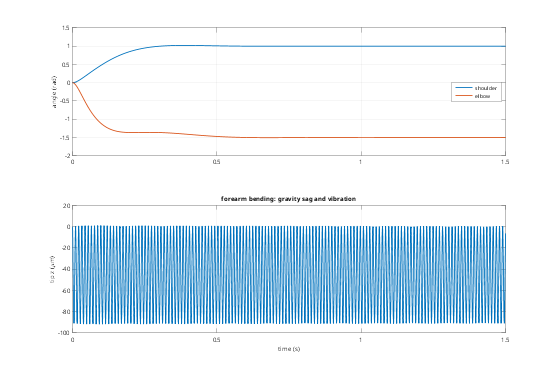
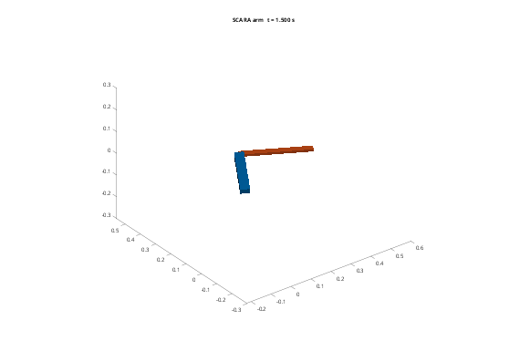
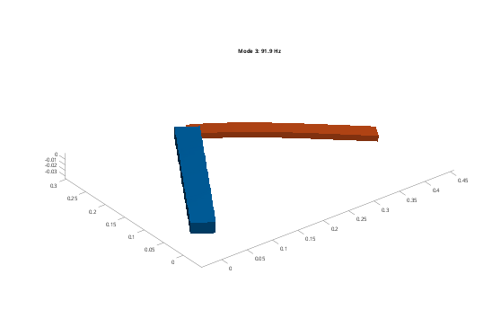

Contents
Tutorial 1 - Your first model: a two-link arm with an elastic forearm
This tutorial goes through the basic workflow:
- geometry (STL) -> fmbd.Body: rigid, or elastic (Gmsh mesh + material)
- bodies -> fmbd.System: joints, couplings, inputs and outputs
- simulate: large motion with a controller in the loop
- equilibrium, modes, statespace: linear analysis about a pose
The arm moves in the horizontal plane (a SCARA arm): a rigid upper arm on a shoulder joint, and an elastic aluminium forearm on an elbow joint, both driven by a motor torque under PD control. Gravity bends the forearm. Run it section by section (Ctrl+Enter), or render it with publish('tut01_firstModel').
addpath(fileparts(fileparts(mfilename('fullpath')))); % toolbox root tmp = tempname; mkdir(tmp);
1. Geometry and bodies
Two boxes as STL files (in m). The upper arm is rigid: its mesh only gives its mass, inertia and surface. The forearm is elastic: Gmsh meshes it with quadratic Tet10 elements, and in the system its deformation is described by Modes vibration modes.
fmbd.boxSTL(fullfile(tmp, 'upper.stl'), [0 -0.02 -0.01], [0.3 0.02 0.01]); fmbd.boxSTL(fullfile(tmp, 'forearm.stl'), [0.3 -0.015 -0.005], [0.6 0.015 0.005]); steel = fmbd.material(210e9, 0.30, 7850); alu = fmbd.material(70e9, 0.33, 2700); upper = fmbd.Body(fullfile(tmp, 'upper.stl'), steel, Size = 0.02, Rigid = true, Name = 'upper'); forearm = fmbd.Body.elastic(fullfile(tmp, 'forearm.stl'), alu, Size = 0.006, Modes = 6, ... Name = 'forearm'); fprintf('upper arm: %.2f kg (rigid); forearm: %.3f kg, %d nodes\n', ... upper.massProperties(), forearm.massProperties(), forearm.nNode);
upper arm: 1.88 kg (rigid); forearm: 0.243 kg, 5155 nodes
2. The system: joints, couplings, inputs and outputs
Joints connect reference points: a rigid body, or a patch of an elastic body made rigid by a coupling. The forearm gets couplings at its root (the elbow; the first coupling also carries the forearm's moving frame) and at its tip (the payload point).
s = fmbd.System(Gravity = [0 0 -9.81]); s.add(upper); s.add(forearm); s.couple('forearm', @(X) X(:,1) < 0.3 + 1e-6, Name = 'root', Point = [0.3 0 0]); s.couple('forearm', @(X) X(:,1) > 0.6 - 1e-6, Name = 'tip'); s.joint('ground', 'upper', 'revolute', Point = [0 0 0], Name = 'shoulder'); % about z s.joint('upper', 'root', 'revolute', Point = [0.3 0 0], Name = 'elbow'); % motor torques on the joints, and sensors: joint angles and rates, and the % vertical tip motion (the forearm's bending) s.input('tau1', 'shoulder'); s.input('tau2', 'elbow'); s.output('th1', 'shoulder'); s.output('w1', 'shoulder', Type = 'velocity'); s.output('th2', 'elbow'); s.output('w2', 'elbow', Type = 'velocity'); s.output('tipz', 'tip', [], 3);
3. Simulation with a controller in the loop
simulate integrates the nonlinear equations in time: exact joint kinematics for large angles, and the forearm's modes in its moving frame. The controller Input = @(t, y) gets the outputs of the previous step.
ref = [1.0; -1.5]; % target angles (rad) kp = [16; 1.5]; kd = [1.8; 0.15]; % PD gains (about 2 Hz bandwidth) pd = @(t, y) kp.*(ref - [y.th1; y.th2]) - kd.*[y.w1; y.w2]; [t, y, x] = s.simulate([0 1.5], Step = 5e-4, Input = pd); figure('Color', 'w'); subplot(2, 1, 1); plot(t, [y.th1 y.th2], 'LineWidth', 1.5); grid on ylabel('angle (rad)'); legend('shoulder', 'elbow', 'Location', 'east'); subplot(2, 1, 2); plot(t, 1e6*y.tipz, 'LineWidth', 1.5); grid on xlabel('time (s)'); ylabel('tip z (\mum)'); title('forearm bending: gravity sag and vibration'); fprintf('final angles %.3f, %.3f rad (targets %.1f, %.1f)\n', y.th1(end), y.th2(end), ref);
final angles 1.000, -1.500 rad (targets 1.0, -1.5)

4. Energy and animation
energy splits the energy into kinetic, gravity, strain and spring parts. animate plays the motion in real time (Rate); Scale magnifies the deformation.
E = s.energy(x); fprintf('largest strain energy in the forearm: %.2e J\n', max(E.strain)); figure('Color', 'w'); s.animate(t, x, Rate = 1, Scale = 200, Title = 'SCARA arm');
largest strain energy in the forearm: 4.33e-04 J

5. Linear analysis about a pose
The final state of the simulation is (nearly) at rest. equilibrium settles it statically (gravity sag of the forearm, joint angles kept), and modes and statespace linearise about it. The two joint angles are free, so the first two modes are mechanism modes at 0 Hz.
xe = s.equilibrium(Initial = x); [f, V] = s.modes(xe, 6); disp(table((1:6)', f, 'VariableNames', {'mode', 'f_Hz'})); figure('Color', 'w'); s.plotMode(xe, V(:,3), Amplitude = 0.03, Title = sprintf('Mode 3: %.1f Hz', f(3))); % the state-space model from the motor torques to the sensors (for control % design, see Tutorial 7) sys = s.statespace(xe, Modes = 10, Damping = 0.01); fprintf('state-space model: %d states, inputs %s, outputs %s\n', size(sys.A, 1), ... strjoin(sys.InputName, ', '), strjoin(sys.OutputName, ', '));
mode f_Hz
____ ______
1 0
2 0
3 91.942
4 573.62
5 1173.7
6 1505.5
state-space model: 24 states, inputs tau1, tau2, outputs th1, w1, th2, w2, tipz
